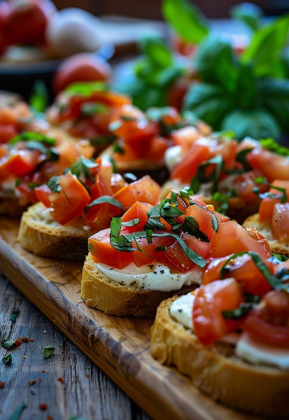

Bruschette cu roșii și busuioc

Ingrediente:
- 4 felii de pâine ciabatta sau baghetă
- 3-4 roșii mari și coapte
- 1 cățel de usturoi
- 2 linguri de ulei de măsline extravirgin
- Frunze de busuioc proaspăt
- Sare și piper, după gust
Mod de preparare:
- Prăjește pâinea pe grătar sau într-o tigaie până devine crocantă.
- Taie roșiile cubulețe și amestecă-le cu ulei de măsline, busuioc, sare și piper.
- Freacă fiecare felie de pâine prăjită cu usturoi.
- Pune amestecul de roșii deasupra feliilor de pâine și servește imediat.
Informații nutriționale per porție:
- Calorii: 300 kcal
- Proteine: 12 g
- Carbohidrați: 10 g
Vezi rețeta originală de Bruschete aici